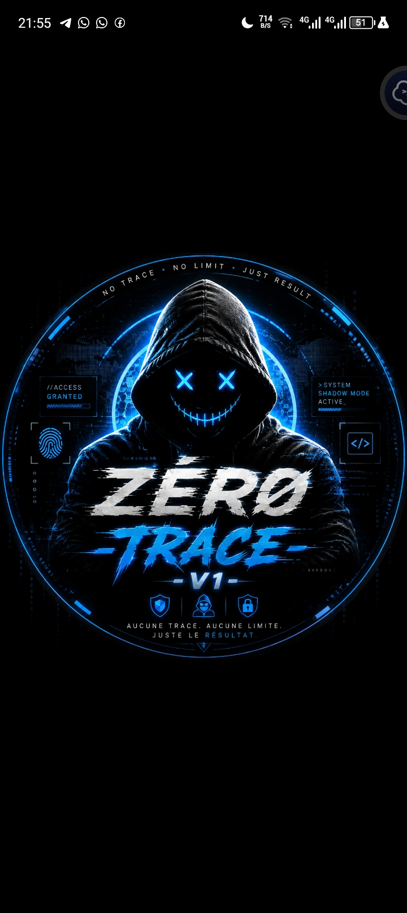

◈
AdministrationOutils de modération, avertissements, protections anti-liens et gestion avancée des groupes.
Une base puissante pour gérer vos groupes, automatiser vos tâches, exploiter l’IA et personnaliser votre expérience de messagerie depuis une seule plateforme.

Une architecture claire, des commandes nombreuses et une identité visuelle reconnaissable. Activez uniquement les fonctions dont votre communauté a besoin.
Outils de modération, avertissements, protections anti-liens et gestion avancée des groupes.
Commandes IA, analyse d’images, chatbot et génération de contenu via vos propres services.
Recherche, téléchargement, stickers, audio et outils créatifs réunis dans une interface simple.
La V1 apporte une nouvelle structure et une présentation plus claire pour faciliter les prochaines versions.
Clonez le dépôt, installez les dépendances et renseignez vos variables dans `.env`.
Lire le guide d’installation